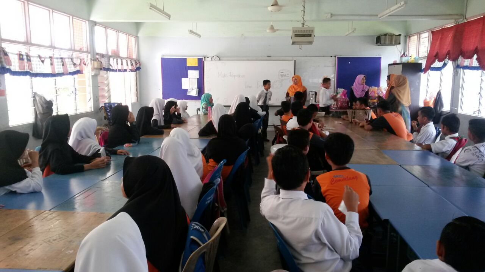
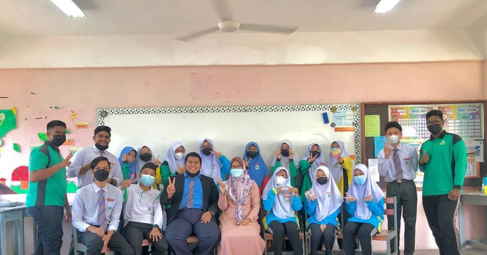
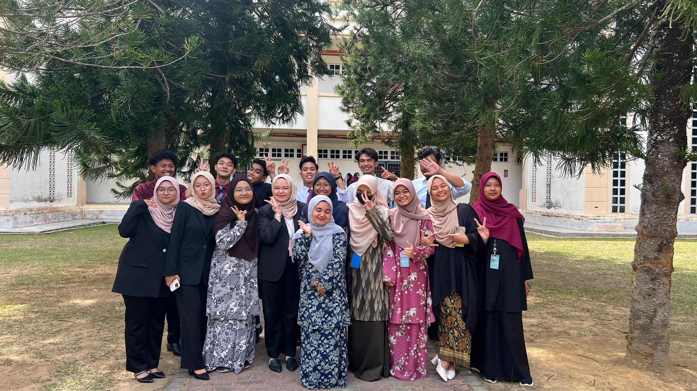
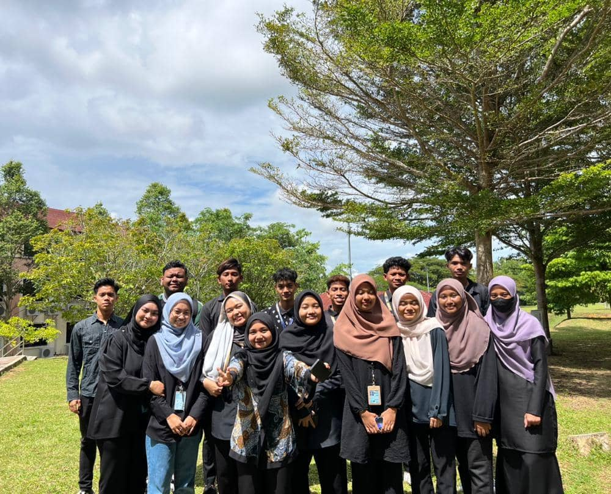
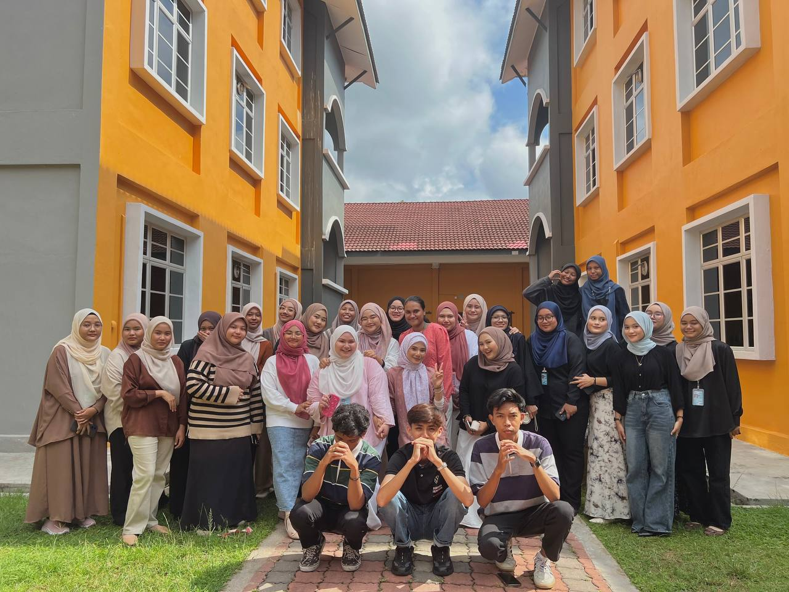
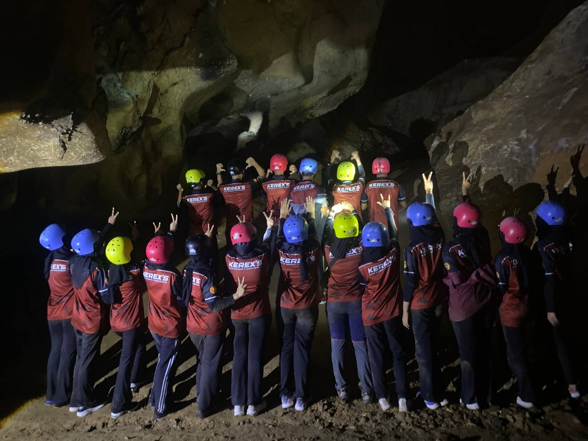

The Evolution Of My Education
My Learning Milestones 📚
- Diploma in Information Management (2022-2025)
- Skills Acquired: Record Management, Cataloging of Record
- Projects: Develope Database, Book Cataloging
- SMK Pengkalan Aur (2017-2021)
- Key Achievements: Top 10 best-ranked students in the grade.
- Skills Acquired: Problem solving, Teamwork
- Projects: Leader of an activity under the School Counseling Unit
- SK Changkat Larut (2009-2016)
- Key Achievements: Full Attendance Award, Best Personality Award
- Extracurricular: 3rd place of Scrabble Competition, Deputy Chief of School Prefects
- Skills Acquired: Leadership, Teamwork
A Collection of Memories from My School Days & Time at UiTM Kedah.





